Contents
% Math 512 Proj 2 clear all close all
1a
a = 7^5; m = 2^31-1; U_1a = zeros(10000,1); U_1a(1) = mod(a,m); for i = 1:length(U_1a)-1 U_1a(i+1) = mod(a*U_1a(i),m); end U_1a = U_1a/m; figure(1) histogram(U_1a);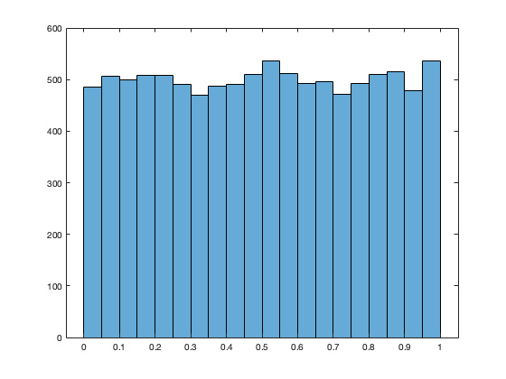
1b
a = 6; m = 11; x = zeros(1,22); x(1) = 3; for i = 1:length(x)-1 x(i+1) = mod(a*x(i),m); end m = 10; y = zeros(1,22); y(1) = 3; for i = 1:length(y)-1 y(i+1) = mod(a*y(i),m); end
1c
figure(2) U_c = rand(10000,1); histogram(U_c)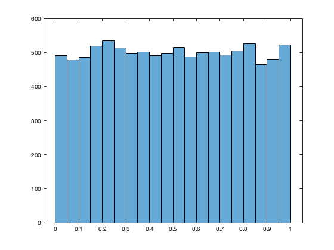
1d
the histogram from 1a presents a fixed distribution but the 1c distribution changes.
1e
u = U_1a(1:9999); v = U_1a(2:10000); figure(3) plot(u,v,LineStyle='none',Marker='*') % note that since u_{n+1} = a*u_n mod m, we have that a*u_n - u_{n+1} = k*m % where k is a non-negative integer. Therefore, u_{n+1} = a*u_n - k*m.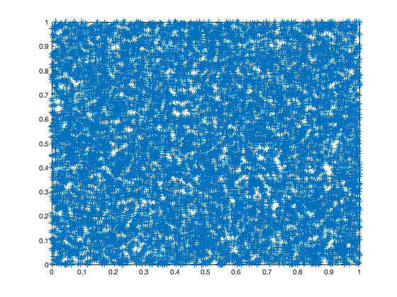
2
X_2 = 300+zeros(10000,1);
X_2(U_1a <= 0.6) = X_2(U_1a <= 0.6) - 500;
X_2(U_1a <= 0.3) = X_2(U_1a <= 0.3) + 300;
X_2(U_1a <= 0.1) = X_2(U_1a <= 0.1) - 85; % this method would have roundoff error when there are more possible values and smaller probabilities
figure(4)
histogram(X_2)
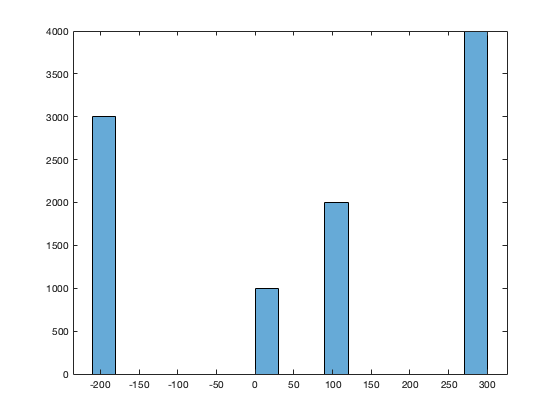 3a
generate uniform random variables
a = 7^5; m = 2^31-1; % parameters for binomial distribution n = 100; p = 0.7; tic U_3a = zeros(6000*n,1); U_3a(1) = U_1a(end)*m; % to make it different from the first set of uniform random variables for i = 1:length(U_3a)-1 U_3a(i+1) = mod(U_3a(i)*a,m); end U_3a = U_3a/m; % generate Binomial using Bernoulli and uniform Bin = zeros(6000,1); for i = 1: length(Bin) tempU = U_3a(1+(i-1)*100:100*i); % take a segment of U Ber = tempU <= p; % Bernoulli Random Variable Bin(i) = sum(Ber); end toc figure(5) histogram(Bin) F_bin_70_data = sum(Bin<=70)/6000; % compute the theoretical probability Bin <= 70 s = 0; for i = 0:70 s = s + factorial(n)/(factorial(i)*factorial(n-i))*p^i*(1-p)^(n-i); end F_bin_70_thry = s; % the empirical probability is pretty close to the theoretical probability
Elapsed time is 0.052853 seconds.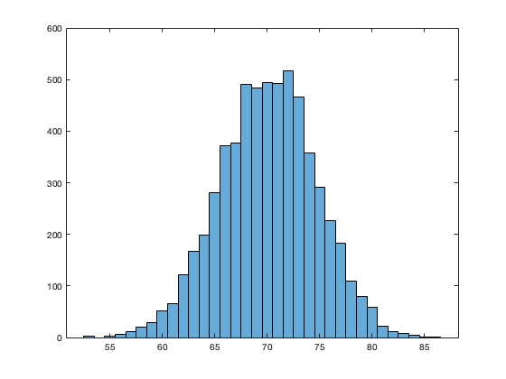
3b
Using inverse transform to generate binomial random variable
% generate uniform random variables tic U_3b = zeros(6000,1); U_3b(1) = U_3a(end); for i = 1:length(U_3b)-1 U_3b(i+1) = mod(a*U_3b(i),m); end U_3b = U_3b/m; % we will do the inverse transformation by computing the probability of % binomial less than or equal to x with x = 100, 99, 98,...,0 Bin_inv = zeros(6000,1); cdf_Bin = zeros(n+1,1); cdf_Bin(1) = (1-p)^n; Bin_inv(U_3b<=cdf_Bin(1)) = 0; % this is an unnecessary step for the purpose of readability for i = 1:length(cdf_Bin)-1 cdf_Bin(i+1) = cdf_Bin(i) + factorial(n)/(factorial(n-i)*factorial(i))*p^i*(1-p)^(n-i); % roundoff error will be a factor at the tail portion of the iteration. Bin_inv(U_3b>cdf_Bin(i) & U_3b<= cdf_Bin(i+1)) = i; end toc figure(6) histogram(Bin_inv)
Elapsed time is 0.005531 seconds.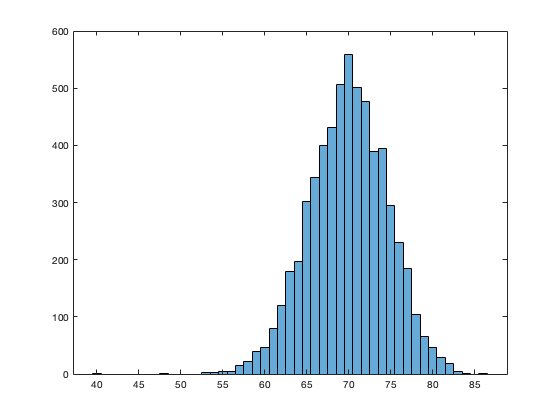
4
%generate uniform random variables U_4 = zeros(5000,1); U_4(1) = U_3b(end); for i = 1:length(U_4)-1 U_4(i+1) = mod(a*U_4(i),m); end U_4 = U_4/m; EXP = -log(1-U_4); figure(7) histogram(EXP)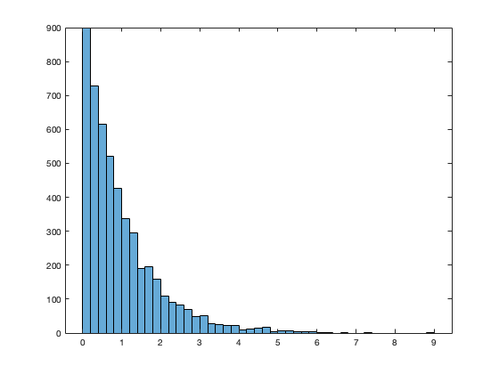
5
% generate uniform random variables using congruence method U_5 = zeros(7000,1); U_5(1) = a; for i = 1:length(U_5)-1 U_5(i+1) = mod(a*U_5(i),m); end U_5 = U_5/m; % convert uniform random variables into Cauchy distributed by inverse % transformation method. Cauchy = tan(pi*(U_5-0.5)); figure(8) histogram(Cauchy,[-15:0.2:15]) hold on x = -15:0.1:15; scal = 1500; % for the purpose of comparing, we scale the density function so we can % superimpose the function graph onto the histogram and compare their % shape. y = 1./(pi*(1+x.^2))*scal; plot(x,y)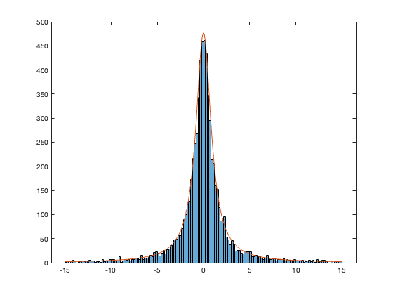
6a
generate uniform random variables
U_6 = rand(100000,1); % we are not using the modulo-generated psuedorandom number because of the % linear correlation between consecutive uniform random variables % Gaussian density G_x = -3:0.1:3; G_y = 300*(2*pi)^0.5*exp(-0.5*G_x.^2); % Box-Muller Method tic Z_BM = zeros(10000,1); for i = 1:length(Z_BM)/2 Z_BM(2*i-1) = (-2*log(U_6(2*i-1)))^(-0.5)*cos(U_6(2*i)*2*pi); Z_BM(2*i) = (-2*log(U_6(2*i-1)))^(-0.5)*sin(U_6(2*i)*2*pi); end toc figure(9) histogram(Z_BM,[-5:0.2:5]) hold on plot(G_x,G_y)
Elapsed time is 0.003136 seconds.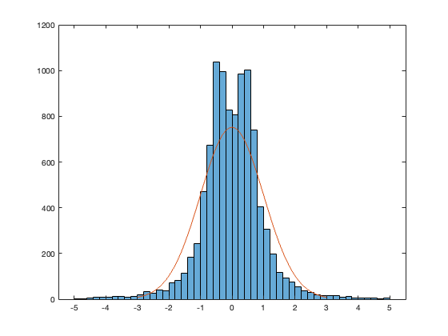
6b
Marsaglia-Bray Method
tic Z_MB = zeros(10000,1); i = 1; ptr = 1; % pointer for uniform variables while i <= length(Z_MB) x = U_6(ptr)*2-1; y = U_6(ptr+1)*2-1; s = x^2+y^2; if s<1 Z_MB(i) = x*(-log(s)/s)^(-0.5); Z_MB(i+1) = y*(-log(s)/s)^(-0.5); i = i+2; end ptr = ptr+2; end toc figure(10) histogram(Z_MB,[-5:0.2:5]) hold on plot(G_x,G_y)
Elapsed time is 0.003122 seconds.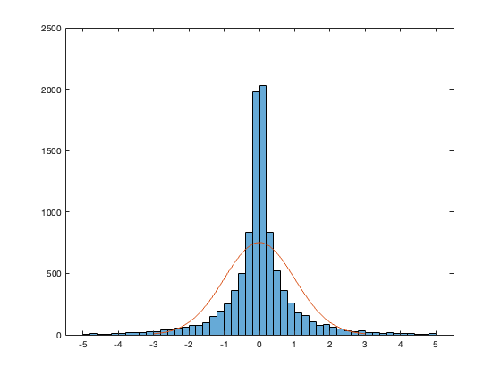
6c
acceptance-rejection method
tic Z_ar = zeros(10000,1); i = 1; ptr = 1; while i<= length(Z_ar) X1 = -log(U_6(ptr)); X2 = -log(U_6(ptr+1)); X3 = U_6(ptr+2); if X2 >= (X1-1)^2/2 Z_ar(i) = abs(X1)*(-1)^(X3<=0.5); i = i+1; end ptr = ptr+3; end toc figure(11) histogram(Z_ar,[-5:0.2:5]) hold on plot(G_x,G_y)
Elapsed time is 0.012618 seconds.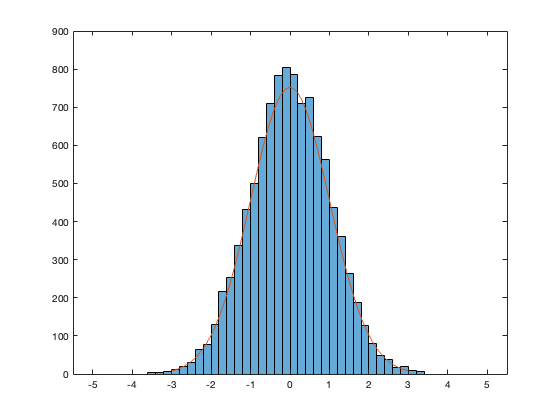
6d
tic
Z = randn(10000,1);
toc
figure(12)
histogram(Z,[-5:0.2:5])
hold on
plot(G_x,G_y)
Elapsed time is 0.000427 seconds.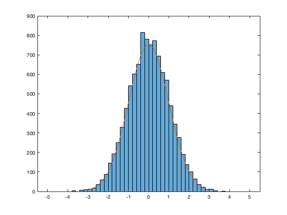